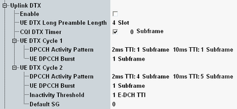

This section describes the parameters for the discontinuous transmission in the uplink, see also "Continuous Packet Connectivity (CPC)".
The parameters from this section are defined in 3GPP TS 25.331 as the DTX-DRX information.

Enables discontinuous transmission in the uplink.
During reduced signaling is activated, use also the "HS-SCCH Order" button to trigger the order type 0 manually.
Remote command:Preamble is used for the synchronization. It transmitted by the UE in the DPCCH before the uplink DTX transmission.
UE transmits the DTX long preamble immediately before the E-DCH transmission in the UE DTX cycle 2.
Remote command:Number of subframes after an HS-DSCH reception during which the CQI reports have higher priority than the DTX pattern and are transmitted according to the regular CQI pattern.
Remote command:The following settings apply to the UE discontinuous transmission cycle one or two.
Specifies when to activate the UE DTX cycle 2 after the last uplink data transmission.
Remote command: